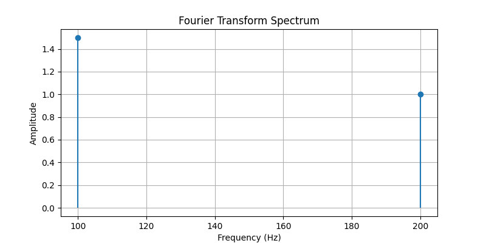
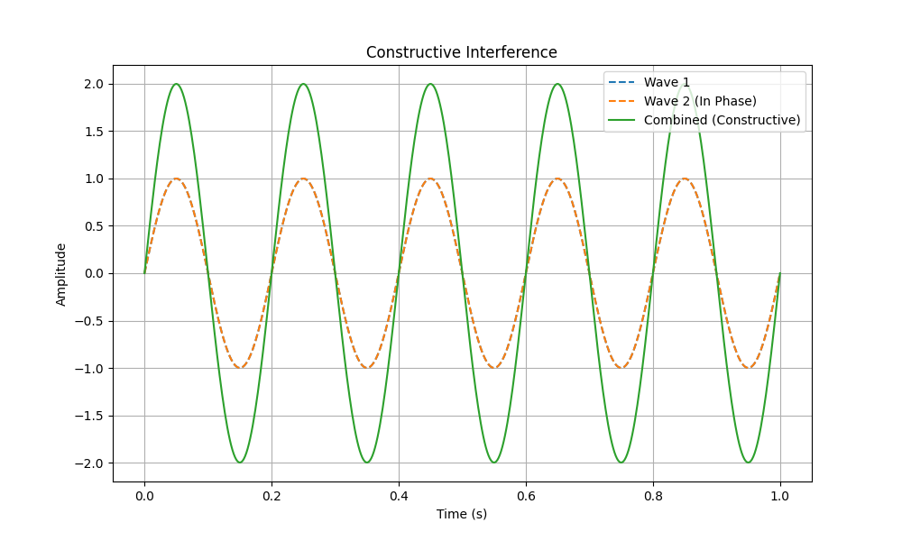
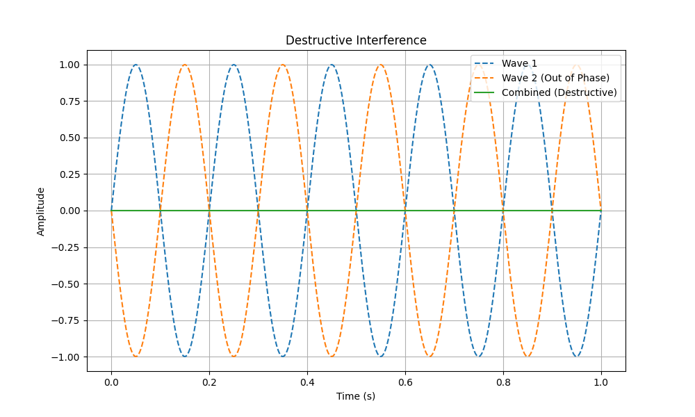

Tutorial 8: Sinusoidal Signals, Phase, and Addition of Sinusoids
1. Key Properties of Sinusoidal Signals
A sinusoid is the simplest form of audio signal, representing a single frequency or pure tone. It includes both sine and cosine waves, and serves as a foundational element in audio analysis and synthesis, forming the building blocks of more complex signals.
Basic Components of a Sinusoid
- Amplitude (A): The peak value of the wave, which determines the intensity or loudness of the sound. Amplitude is typically measured in decibels (dB) in audio applications.
- Period (T): The time it takes to complete one full cycle, measured in seconds. This duration is the time between successive peaks or troughs.
- Frequency (f): The number of cycles per second, measured in Hertz (Hz). Frequency can be calculated as the reciprocal of the period:
\[ f = \frac{1}{T} \]Higher frequencies are perceived as higher pitches, while lower frequencies correspond to lower pitches.
Magnitude and Phase
A sinusoid’s magnitude is another term for its amplitude, representing the maximum value of the wave. Meanwhile, the phase of a sinusoid specifies its position within a cycle at a given time, typically measured in radians or degrees. These properties together fully define a sinusoidal signal and influence how it interacts with other signals.
Example Calculations:
- If a sinusoid has a period \( T = 0.25 \, \text{s} \), its frequency is calculated as:
\[ f = \frac{1}{0.25} = 4 \, \text{Hz} \]
- Common audio frequencies include:
- 100 Hz - Generally perceived as low bass frequencies.
- 1 kHz - Represents midrange frequencies.
- 10 kHz - Considered high or treble frequencies.
Visualization of Sinusoidal Characteristics
A sinusoid’s properties—amplitude, period, and frequency—can be illustrated in a chart showing their relationships. For instance, a sinusoid with a higher frequency will have a shorter period, while one with a greater amplitude will appear taller on the chart.

Conversion Tip
When working with time delays in calculations, convert milliseconds (ms) to seconds (s) by dividing by 1000. For example, a time delay of 150 ms would convert to:
Worked Example: Calculating Frequency from Period
Suppose we have a sinusoid with a period of \( T = 0.005 \, \text{s} \) (or 5 ms). The frequency can be calculated as:
2. Phase and Phase Delay in Sinusoids
Phase (\( \phi \)) represents a specific point within a cycle of a sinusoid, measured in radians or degrees. The phase is essential for aligning signals, understanding interference, and determining how combined sinusoids form complex waveforms.
Understanding Phase and Phase Delay
The phase of a sinusoidal wave defines its position within a cycle at any given moment. When comparing two sinusoidal waves, a phase delay quantifies how much one wave lags behind another. This delay directly impacts how the waves interact, producing effects such as constructive or destructive interference.
Phase Delay Calculation
For a sinusoid with frequency \( f \) and a time delay \( t_D \), the phase delay can be calculated as follows:
where:
- \( f \) is the frequency of the sinusoid in Hertz (Hz).
- \( t_D \) is the time delay in seconds.
Example Calculation of Phase Delay
For a sinusoidal signal with a frequency of 10 Hz and a time delay of 150 ms:
- Convert the time delay to seconds: \( t_D = 0.15 \, \text{s} \).
- Calculate the phase delay:
\[ \phi = -2 \pi \cdot 10 \cdot 0.15 = -9.42 \, \text{radians} \]
This calculation indicates that the second wave lags by 9.42 radians, which affects how it combines with any overlapping wave.
Phase Conversion between Degrees and Radians
Phase angles can be converted between degrees and radians. Here is a quick reference:
- 0° = 0 radians
- 90° = \( \frac{\pi}{2} \) radians
- 180° = \( \pi \) radians
- 360° = \( 2\pi \) radians
Worked Example: Phase Impact on Signal Overlap
Consider two sinusoidal waves with identical frequency and amplitude. Their phase alignment will determine the resulting signal:
- In Phase (0°): The waves align perfectly, resulting in a stronger combined signal with increased amplitude (constructive interference).
- Out of Phase by 180°: The peaks of one wave align with the troughs of the other, canceling each other out and reducing the amplitude (destructive interference).
Table of Key Phase Angle Conversions
The following table shows conversions between common phase angles in degrees and radians:
| Degrees (°) | Radians |
|---|---|
| 0° | 0 |
| 90° | \( \frac{\pi}{2} \) |
| 180° | \( \pi \) |
| 360° | \( 2\pi \) |
Tips for Accurate Phase Calculations
- Always convert time units (e.g., milliseconds to seconds) before calculating phase delay for consistency.
- Use \( 180^\circ = \pi \) as a standard conversion baseline between degrees and radians.
- Double-check units and conversions to ensure accuracy, especially when working with multiple frequencies or time delays.
3. Fourier Transform Analysis and Sinusoidal Components
The Fourier Transform is a mathematical tool that decomposes complex signals into simpler sinusoidal components, each with its own frequency, amplitude, and phase. This decomposition is fundamental in fields such as sound synthesis, signal processing, and audio engineering because it reveals the individual frequencies that make up a complex waveform.
Understanding Fourier Transform Components
- Frequency: Represents the pitch or tone of each sinusoidal component within the signal. Higher frequencies correspond to higher-pitched sounds, and each component’s frequency determines its rate of oscillation.
- Amplitude: Reflects the intensity or loudness of each sinusoidal component in the signal. A higher amplitude indicates a stronger contribution of that frequency to the overall signal. Peaks in the Fourier spectrum reveal the dominant frequencies.
- Phase: Defines the starting position of each sinusoidal component within its cycle. Phase is crucial for determining how sinusoids combine to form the overall signal, as phase differences can result in constructive or destructive interference.
How the Fourier Transform Works
The Fourier Transform converts a time-domain signal (a waveform varying over time) into a frequency-domain representation, showing the frequencies present in the signal along with their amplitudes. In digital audio, the Discrete Fourier Transform (DFT) is commonly used, and the Fast Fourier Transform (FFT) algorithm efficiently computes the DFT, making it practical for applications in audio processing.
Fourier Transform Decomposition Example
In Fourier analysis, a complex signal can be represented as a sum of individual sinusoids, each with its own amplitude, frequency, and phase. This breakdown allows us to represent even intricate waveforms as simpler components:
In this formula:
- \( A_1, A_2, \dots \): represent the amplitudes of each sinusoidal component, indicating the strength of each frequency within the signal.
- \( f_1, f_2, \dots \): represent the frequencies of each component, determining each sinusoid’s pitch.
- \( \phi_1, \phi_2, \dots \): represent the phase shifts of each component, affecting how these components align in time.
Visualization: Layered Frequency Decomposition
This diagram demonstrates how multiple sinusoidal components with varying frequencies combine to form a complex waveform:

Phase Shift Interaction Over Time
This diagram illustrates how two sinusoids with a phase shift combine, showing the impact of phase on the resulting waveform:

Worked Example: Fourier Decomposition of a Simple Signal
Consider a signal composed of two sinusoidal components:
- First component: Amplitude = 1.5, Frequency = 100 Hz, Phase = \( \pi/4 \) radians.
- Second component: Amplitude = 1.0, Frequency = 200 Hz, Phase = \( \pi/2 \) radians.
This signal can be represented as:
Calculating this over a short time interval (e.g., 0 to 0.01 seconds) produces a composite waveform where each sinusoid shapes the overall signal. Here is the amplitude at \( t = 0.005 \) seconds:
Diagram of Fourier Transform Spectrum
This Fourier spectrum chart shows the breakdown of the example signal into its frequency components:

Composite Waveform Visualization
This diagram visualizes how two sinusoids with different frequencies, amplitudes, and phase shifts combine to create a complex waveform:

Tips for Interpreting Fourier Transforms
- Identifying Frequency Peaks: Peaks in the Fourier spectrum correspond to dominant frequencies. For this example, peaks appear at 100 Hz and 200 Hz, each representing one of the sinusoidal components.
- Assessing Amplitude: The height of each peak reflects the intensity (or amplitude) of each frequency component, showing which frequencies are most prominent in the signal.
- Considering Phase Impact: Phase shifts affect how sinusoidal components align over time. When phases match, components can add constructively (resulting in higher amplitude). Out-of-phase components may cancel each other out, leading to destructive interference. This becomes particularly relevant when multiple sinusoids overlap in a complex signal.
4. Constructive and Destructive Interference
When two or more sinusoidal waves overlap, their phase relationships determine how they combine. This combination can result in either constructive interference or destructive interference, affecting the overall amplitude and shape of the combined waveform.
Constructive Interference
Constructive interference occurs when waves are in phase (or nearly in phase) with each other, meaning their peaks and troughs align. This alignment causes an increase in the combined amplitude, often described as a reinforcing effect.
For example, if two waves with the same frequency and amplitude are perfectly in phase, the resulting wave will have an amplitude equal to the sum of the two original amplitudes:

Destructive Interference
Destructive interference occurs when waves are out of phase by 180° (or close to it). In this case, the peaks of one wave align with the troughs of the other, causing the waves to partially or completely cancel each other out. This results in a reduced amplitude, and in some cases, the amplitude may drop to zero.
If two waves with the same frequency and amplitude are completely out of phase, the resulting wave will have an amplitude of zero:

Worked Example: Constructive and Destructive Interference
Consider two sinusoidal waves with the following properties:
- Wave 1: Amplitude = 1.0, Frequency = 5 Hz, Phase = 0°
- Wave 2: Amplitude = 1.0, Frequency = 5 Hz
If Wave 2 has a phase shift of 0° (in phase), constructive interference occurs, doubling the combined amplitude:
If Wave 2 has a phase shift of 180° (out of phase), destructive interference occurs, causing the waves to cancel each other completely:
Visualization of Constructive and Destructive Interference
Interference in Complex Signals
In complex signals with multiple frequency components, interference patterns can be intricate and unpredictable. Different sinusoidal components may align in ways that produce both constructive and destructive interference, leading to dynamic changes in amplitude over time.
Real-World Applications of Interference
- Acoustic Engineering: Interference patterns affect room acoustics, where certain frequencies may be amplified or diminished depending on the room’s layout and materials.
- Noise-Canceling Technology: Noise-canceling headphones create destructive interference by generating sound waves out of phase with ambient noise, reducing unwanted sounds.
- Audio Signal Processing: In audio mixing and sound design, phase alignment is essential to prevent unwanted cancellations, especially when layering tracks with similar frequencies.
Tips for Understanding Interference in Signals
- Analyze phase differences carefully. Phase differences of 0° and 180° create the most pronounced constructive and destructive effects, respectively.
- Interference significantly affects perception in audio applications. Constructive interference can amplify sounds, while destructive interference can reduce or eliminate specific frequencies.
- Real-world signals often contain multiple frequencies with varying phases, resulting in complex interference patterns that shape the final waveform.
5. Practical Application of Fourier Transform in Sound Synthesis
The Fourier Transform is a key technique in sound synthesis and audio engineering. By breaking down a complex sound into its sinusoidal components, it allows precise control over individual frequencies, enabling adjustments to tone, pitch, and timbre.
Using Fourier Transform in Audio Processing
In audio processing, the Fourier Transform decomposes sounds into frequency components, supporting various audio manipulations:
- Equalization (EQ): Adjusts specific frequency ranges to enhance or reduce tonal qualities.
- Reverb and Echo: Modifies phases and delays to create spatial effects.
- Spectral Analysis: Examines the frequency spectrum to identify peaks and harmonic structures.
Sound Synthesis Using Fourier Components
Sound synthesis builds or shapes sounds by controlling frequency components to create unique timbres. Common synthesis methods include:
- Additive Synthesis: Constructs sounds by layering sinusoidal waves of varying frequencies and amplitudes.
- Subtractive Synthesis: Begins with a complex waveform, removing certain frequencies to shape the sound.
- FM Synthesis (Frequency Modulation): Modulates one frequency with another to create rich, complex tones.
Worked Example 1: Additive Synthesis Calculations
In additive synthesis, complex sounds are created by combining multiple sine waves with distinct properties:
- Component 1: Frequency = 100 Hz, Amplitude = 0.8, Phase = 0°
- Component 2: Frequency = 300 Hz, Amplitude = 0.5, Phase = 90°
- Component 3: Frequency = 500 Hz, Amplitude = 0.3, Phase = 180°
The combined waveform can be expressed as:
To find \( A(t) \) at a specific time (e.g., \( t = 0.01 \) seconds), substitute the value for \( t \), compute each component, and sum them to find the total amplitude.
This method produces a complex waveform. By adjusting frequencies and amplitudes, various tones can be created:
- Increasing high-frequency amplitudes creates a brighter tone.
- Emphasizing lower frequencies adds depth to the sound.
- Introducing phase shifts adds subtle interference patterns, enriching the tone.
Diagram of Additive Synthesis in Action

Worked Example 2: Equalization (EQ) Calculations Using Fourier Transform
In EQ, the Fourier Transform is used to identify and adjust specific frequencies, shaping the audio’s tonal balance.
Consider a signal with prominent peaks at 100 Hz, 1 kHz, and 5 kHz:
- Analyze the Signal: Use Fourier Transform to locate frequency peaks in the spectrum.
- Boost or Reduce Frequencies:
- Boosting 100 Hz enhances bass.
- Reducing 1 kHz opens space for other sounds in that range.
- Boosting 5 kHz adds brightness and clarity.
Amplitude adjustments can be calculated using the following formula:
For a +3 dB boost, multiply the amplitude by \( 10^{\frac{3}{20}} \approx 1.412 \).
After adjustment, the Fourier spectrum shows an increase at 100 Hz and 5 kHz, and a decrease at 1 kHz.
Diagram of EQ Adjustment in Fourier Spectrum

Worked Example 3: Frequency Modulation (FM) Synthesis Formula
FM synthesis modulates a carrier wave’s frequency using a modulator wave, creating complex tones with sidebands:
Where:
- \( A_c \): Carrier amplitude.
- \( f_c \): Carrier frequency.
- \( f_m \): Modulator frequency.
- \( I \): Modulation index, controlling frequency deviation.
Practical Tips for Applying Fourier Transform in Sound Synthesis
- Frequency Selection: Choose frequencies carefully to avoid overcrowding specific ranges and maintain clarity.
- Amplitude Control: Balance component amplitudes to ensure no single frequency overwhelms the sound.
- Phase Alignment: Experiment with phase shifts to create unique textures. For EQ, align phases to avoid unwanted cancellations.
- Utilizing Software Libraries: Libraries like
numpyorscipyin Python make Fourier Transform computations more accessible for sound analysis and manipulation.
6. Practical Applications of Fourier Transform in Sound Synthesis and Audio Engineering
The Fourier Transform is foundational in sound synthesis and audio engineering, enabling precise control over sound design, equalization, reverb effects, and more. By analyzing the unique frequency components of complex sounds, engineers and musicians can shape tonal qualities and recreate instrument sounds with remarkable accuracy.
Fourier Transform in Real-World Instrument Analysis
Each musical instrument has a unique harmonic structure, often referred to as its timbre. Fourier analysis reveals this harmonic content, aiding in the recreation, modification, or synthesis of distinct instrumental sounds.
Piano
The piano sound is characterized by rich harmonics and overtones. Fourier analysis of a single piano note shows:
- The fundamental frequency represents the main pitch (e.g., 261.63 Hz for middle C).
- Overtones, or harmonic frequencies (multiples of the fundamental), add warmth and resonance. For example, the second harmonic is at 523.25 Hz, the third at 784.88 Hz, and so on.
- The amplitude of each overtone shapes the timbre, influencing how "bright" or "dark" the sound appears.
Worked Example: Piano Harmonics
Analyzing middle C (C4) using Fourier Transform might yield the following components:
- Fundamental: 261.63 Hz
- 2nd Harmonic: 523.25 Hz (Amplitude = 0.6 of fundamental)
- 3rd Harmonic: 784.88 Hz (Amplitude = 0.4 of fundamental)
By synthesizing these frequencies with their respective amplitudes, we can recreate a sound that resembles a piano note.
Guitar
Guitar tones vary depending on strings, frets, and playing techniques. Fourier analysis of a guitar note typically reveals:
- Harmonic Frequencies: A strong fundamental frequency and harmonics at multiples. For an open A string at 110 Hz, harmonics appear at 220 Hz, 330 Hz, and so forth.
- Inharmonic Content: Some non-harmonic frequencies, due to complex string vibrations, add a characteristic "twang."
Worked Example: Guitar Harmonics and Inharmonics
For the open A string:
- Fundamental: 110 Hz
- 2nd Harmonic: 220 Hz (Amplitude = 0.7 of fundamental)
- 3rd Harmonic: 330 Hz (Amplitude = 0.5 of fundamental)
- Inharmonic: 305 Hz (Amplitude = 0.2 of fundamental, adding twang)
Combining these frequencies captures the unique tone of the open A string.
Drums
Drums produce complex, percussive sounds rich in transients and overtones. Fourier analysis of a drum hit shows:
- Transient Peaks: High-amplitude frequencies at the initial attack.
- Harmonic Decay: Rapid amplitude decay of various harmonic and inharmonic components, creating a short, percussive sound.
Worked Example: Snare Drum Spectrum
Analyzing a snare drum hit might reveal:
- Attack Frequencies: Peaks at 500 Hz, 1.5 kHz, and 3 kHz during the initial impact.
- Decay Frequencies: Lower frequencies at 200 Hz and 300 Hz with rapid amplitude decay.
These transients and decaying frequencies together synthesize the sharp, cutting sound of a snare drum.
Windowing Functions in Fourier Transform Calculations
When applying Fourier Transform to finite audio signals, a windowing function smooths signal edges, reducing spectral artifacts. Common windows include:
- Hann Window: Ideal for smooth, continuous signals.
- Hamming Window: Reduces frequency leakage, useful for signals with rapid changes.
- Blackman Window: High-quality response for detailed audio processing.
Discrete Fourier Transform (DFT) and Fast Fourier Transform (FFT) in Digital Processing
In digital audio, the Discrete Fourier Transform (DFT) is used to analyze finite, discrete signals, while the Fast Fourier Transform (FFT), an optimized DFT, is used in real-time applications:
- Real-time Spectral Analysis: Live monitoring of tonal balance, pitch, and rhythm.
- Sound Compression: FFT-based codecs, like MP3, retain essential frequencies, reducing file size with minimal quality loss.
- Digital EQ and Filtering: FFT enables high-resolution EQ adjustments for precise mixing and mastering.
Worked Example: Fourier Transform in Sound Synthesis and EQ
Using Fourier Transform to adjust an audio sample with three primary frequencies:
- 100 Hz (Bass): Adds depth.
- 1 kHz (Midrange): Enhances presence.
- 5 kHz (Highs): Adds brightness.
After identifying these frequencies with FFT:
- Boost 100 Hz for enhanced bass.
- Reduce 1 kHz slightly to avoid midrange congestion.
- Increase 5 kHz for added clarity.
Practical Tips for Applying Fourier Transform Techniques
- Experiment with Windowing Functions: Use Hann or Hamming windows for smooth spectral transitions.
- Utilize FFT for Efficiency: FFT offers quick, accurate analysis for real-time processing.
- Leverage Spectral Analysis in Mixing: Balance frequency ranges to avoid overpowering the mix.
Symbols Table
This table provides an overview of the key symbols and terms used throughout the tutorial, including their meanings, formulas, units, and a reference to additional notes where applicable.
| Symbol | Description | Formula/Additional Detail | Units | Note Ref |
|---|---|---|---|---|
| \( A \) | Amplitude - The peak value of the sinusoidal wave, representing intensity or loudness | \( A(t) = A \sin(\omega t + \phi) \) | Varies (e.g., volts, dB) | — |
| \( T \) | Period - The time taken to complete one full cycle of the waveform | \( T = \frac{1}{f} \) | Seconds (s) | — |
| \( f \) | Frequency - The number of cycles per second, determining the pitch of the sound | \( f = \frac{1}{T} \) | Hertz (Hz) | — |
| \( \omega \) | Angular Frequency - Describes the rate of change of phase per second | \( \omega = 2 \pi f \) | Radians per second (rad/s) | 1 |
| \( \phi \) | Phase - The offset or position within a cycle of the sinusoidal wave |
Initial phase: \( A(t) = A \sin(\omega t + \phi) \) Phase delay: \( \phi = -2 \pi f t_D \) |
Radians (rad) or Degrees (°) | 2 |
| \( t_D \) | Time Delay - The delay between two waveforms, affecting phase alignment | \( t_D = \frac{\phi}{-2 \pi f} \) | Seconds (s) | 3 |
| \( \pi \) | Pi - A constant representing the ratio of a circle’s circumference to its diameter | \( \approx 3.14159 \) | — | — |
| dB | Decibels - A logarithmic unit for measuring amplitude or intensity in audio | \( \text{dB} = 20 \log_{10} \left( \frac{A_{\text{out}}}{A_{\text{in}}} \right) \) | Decibels (dB) | — |
| FFT | Fast Fourier Transform - An efficient algorithm for calculating the Discrete Fourier Transform | Commonly used for real-time spectral analysis | — | — |
| DFT | Discrete Fourier Transform - Converts a discrete signal from the time to the frequency domain | Basis of Fourier analysis in digital signal processing | — | — |
| Hann Window | Window function used in Fourier Transform to reduce spectral leakage | Good for smoothing continuous signals | — | 4 |
| Hamming Window | Window function reducing leakage for signals with rapid changes | Common in discrete signal processing | — | 4 |
| Blackman Window | Window function providing high-resolution frequency response in Fourier analysis | Useful for detailed audio processing | — | 4 |
| \( A(t) \) | Amplitude at a specific time \( t \) | Given by \( A(t) = A \sin(\omega t + \phi) \) for a sinusoidal wave | Varies (e.g., volts, dB) | — |
| \( A_c, f_c, f_m, I \) | FM Synthesis Parameters: Carrier amplitude, carrier frequency, modulator frequency, modulation index |
FM Synthesis formula: \( A(t) = A_c \sin(2 \pi f_c t + I \sin(2 \pi f_m t)) \) |
Varies | 5 |
| dB Gain | Decibel Gain - The gain applied to a signal’s amplitude in equalization | \( \text{New Amplitude} = \text{Original Amplitude} \times 10^{\frac{\text{dB Gain}}{20}} \) | Decibels (dB) | — |
Additional Notes
- [1] Angular Frequency (\( \omega = 2 \pi f \)): Angular frequency represents how rapidly the phase angle changes per second. It’s critical for understanding how quickly a wave oscillates and is especially useful in phase and delay calculations.
- [2] Phase (\( \phi \)): Phase can have multiple meanings in audio analysis. As an initial phase, it represents the wave’s starting point. For phase delay between two signals, it quantifies how much one signal lags behind another.
- [3] Time Delay (\( t_D \)): Time delay can be derived from phase delay, as shown by \( t_D = \frac{\phi}{-2 \pi f} \), useful when assessing phase alignment in signal interference.
- [4] Window Functions (Hann, Hamming, Blackman): These functions are applied in FFT/DFT to handle edge effects and spectral leakage, which can distort the frequency representation in digital signals. Each function has specific benefits based on signal characteristics:
- Hann Window: Best for continuous, smoother signals.
- Hamming Window: Reduces leakage for discrete signals with sharp transitions.
- Blackman Window: Offers high-resolution frequency response, useful for precise audio processing.
- [5] FM Synthesis Parameters: Frequency Modulation (FM) synthesis relies on a carrier wave modulated by a secondary frequency, creating complex tones rich in harmonics. The modulation index \( I \) controls the extent of frequency deviation, crucial for generating intricate sound textures.